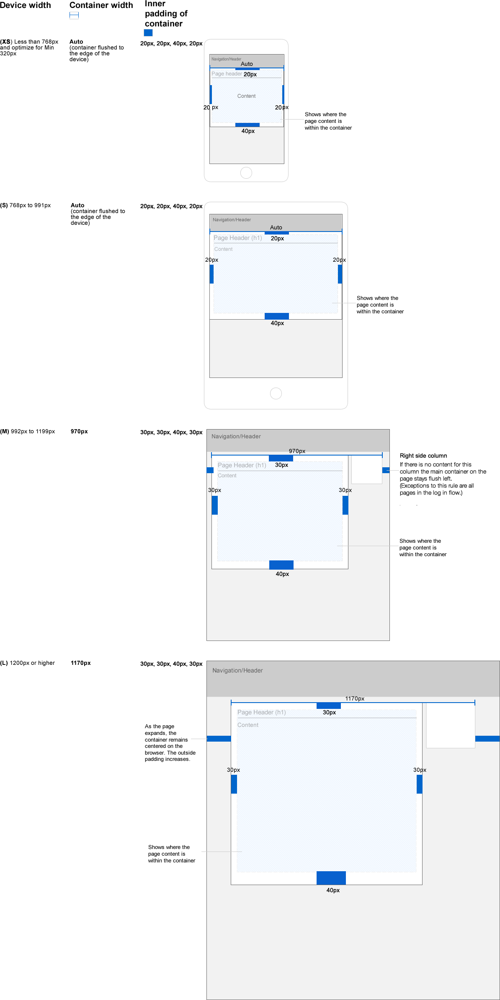
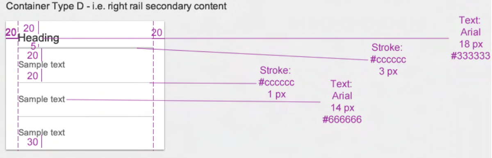

Responsive UI
Breakpoint
Fixed containers driven by the device width are used here. Use default Bootstrap breakpoints (XS, S, M, L) along with the container width, unless specified differently for a design. The page background is #EDEDED. The container background is #FFFFFF.
| Device width | Container width |
| (L) 1200px or higher | 1170px |
| (M) 992px to 1199px | auto |
| (S) 768px to 991px | auto |
| Less than 768px | auto |
Grid
Three equal columns
Use three equal-width columns starting at desktops and scaling to large desktops. On mobile devices, tablets, and smaller, the columns will automatically stack.
Three unequal columns
Use three equal-width columns starting at desktops and scaling to large desktops. On mobile devices, tablets, and smaller, the columns will automatically stack.
Two columns
Use two columns starting at desktops and scaling to large desktops.
Full width, single column
No grid classes are necessary for full-width elements.
Two columns with two nested columns
Use a row of columns within an existing column. This creates two columns starting at desktops and scaling to large desktops, with another two (equal widths) within the larger column.
At mobile device sizes, tablets, and smaller, these columns and their nested columns will stack.
Mixed: mobile and desktop
The Bootstrap 3-grid system has four tiers of classes: XS (phones), SM (tablets), MD (desktops), and LG (larger desktops). You can use almost any combination of these classes to create more dynamic and flexible layouts.
Each tier of classes scales up. For example, if you plan to set the same widths for XS and SM, you only need to specify XS.
Mixed: mobile, tablet, and desktop
Column clearing
Clear floats at specific breakpoints to prevent awkward wrapping with uneven content.
Resize your viewport or check it out on your phone for an example.
Offset, push, and pull resets
Reset offsets, pushes, and pulls at specific breakpoints.
Padding
Primary Container / Panel
The primary container should follow the padding guidelines for each breakpoint. To maintain the correct top padding for each column, apply a class name “ first” to the top “di-container” in each column. Failure to do so will result in content not aligning at the top of each column.
| Breakpoint | Padding (from the edge of the screen to content) |
| L | 30px all side, bottom 40px. |
| M | 30px all side, bottom 40px. |
| S | 20px all side, bottom 40px. |
| XS | 20px all side, bottom 40px. |

Secondary Container / Panel
| Breakpoint | Padding |
| L, M, S | 20px (from the edge the container to content) & 30px at bottom |
| XS | Do not user container at this size |
Examples
